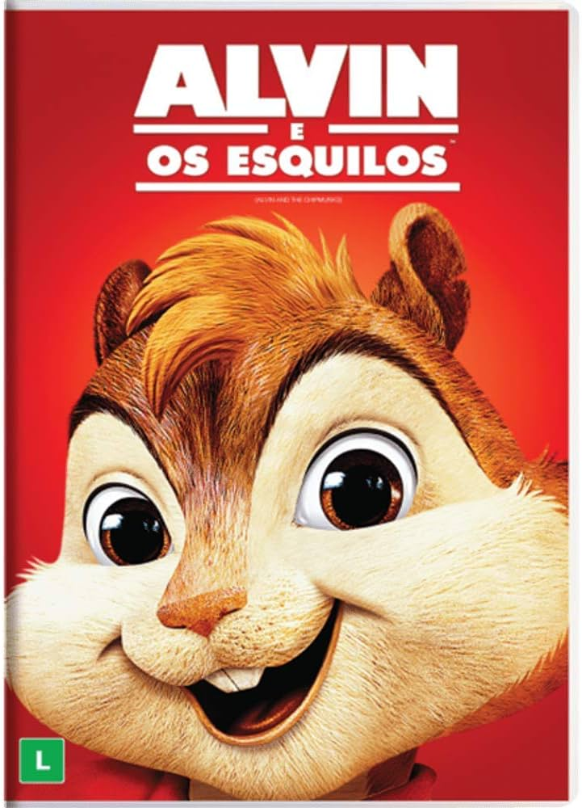
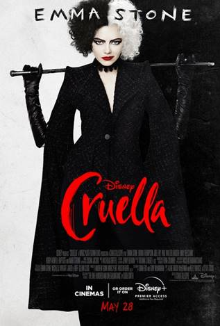
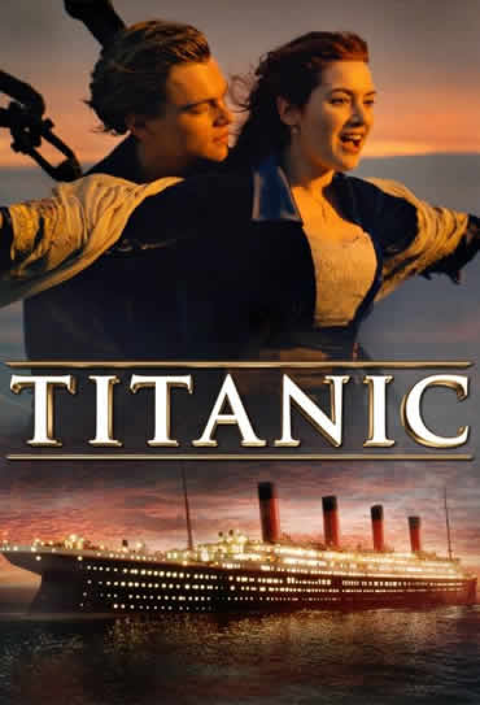

.jpeg)


Aqui vocẽ encontra uma seleção dos melhores filmes de todos os tempos. Aproveite para conhecer explorar os títulos que marcaram gerações, com suas histórias envolventes e atuações memoráveis.
| Filme | Imagem | Sinopse |
|---|---|---|
| Avatar | |
Jake Sully (Sam Worthington) ficou paraplégico após um combate na Terra. Ele é selecionado para participar do programa Avatar em substituição ao seu irmão gêmeo, falecido. Jake viaja a Pandora, uma lua extraterrestre, onde encontra diversas e estranhas formas de vida. |
| É assim que acaba | É Assim Que Acaba, longa do diretor Justin Baldoni, é uma adaptação cinematográfica do livro de mesmo nome da autora Collen Hoover. Na trama, Lily Bloom (Blake Lively) é uma mulher que, após vivenciar eventos traumáticos na infância, decide começar uma vida nova em Boston e tentar abrir o próprio negócio. Como consequência dessa mudança de vida, Lily acredita que encontrou o amor verdadeiro em Ryle (Justin Baldoni), um charmoso neurocirurgião. No entanto, à medida que o relacionamento se torna cada vez mais sério, também surgem lembranças de como era o relacionamento de seus pais. Até que, repentinamente, Atlas Corrigan (Brandon Sklenar), seu primeiro amor e uma ligação com o passado - uma alma gêmea, talvez? - retorna para a vida de Lily. As coisas se complicam ainda mais, quando um incidente doloroso desencadeia um trauma do passado, ameaçando tudo o que Lily construiu com Ryle. Agora, com seu primeiro amor de volta em sua vida, ela precisará decidir se tem o que é preciso para levar o casamento adiante. | |
| Alvin e os esquilos |  | Alvin, Simon e Theodore são três esquilos especiais, que decidem morar na casa de Dave Seville (Jason Lee), um compositor em busca do sucesso. Logo eles percebem que, para que Dave permita que eles morem em sua casa, o trio precisará demonstrar que tem talento. Assim Alvin, Simon e Theodore mostram que sabem cantar, tornando-se um grande sucesso. Isto faz com que Dave torne-se não apenas seu compositor, mas também um verdadeiro pai. Só que o estrelato sobe à cabeça do trio, gerando problemas no relacionamento deles com Dave. |
| As branquelas | |
Em As Branquelas, os irmãos Marcus (Marlon Wayans) e Kevin Copeland (Shawn Wayans) são detetives do FBI que estão com problemas no trabalho. A última investigação da dupla foi um grande fracasso e eles estão sob a ameaça de serem demitidos. Quando um plano para sequestrar as mimadas irmãs Brittany (Maitland Ward) e Tiffany Wilson (Anne Dudek) é descoberto, o caso é entregue aos principais rivais dos irmãos Copeland, os agentes Vincent Gomez (Eddie Velez) e Jack Harper (Lochlyn Munro). Para aumentar ainda mais a humilhação da dupla, eles são escalados para escoltar as jovens mimadas do aeroporto até o local de um evento pelo qual elas esperaram por meses. Porém no trajeto um acidente de carro provoca um verdadeiro desastre: enquanto uma das irmãs arranha o nariz, a outra corta o lábio. Desesperadas, elas se recusam a ir ao evento. É quando,para salvar o emprego, Marcus e Kevin decidem por assumir as identidades das irmãs. |
| Bad Boys | |
Os policiais Burnett (Martin Lawrence) e Lowrey (Will Smith) são encarregados de encontrar um carregamento de heroína que foi roubado. Uma testemunha liga para a delegacia dizendo ser capaz de identificar o ladrão. O pacato Burnett finge ser Lowrey para não perder o caso e acaba tendo que proteger a mulher, enquanto seu parceiro mulherengo cuida de sua família |
| Cruella |  | Ambientado na Londres dos anos 70 em meio à revolução do punk rock, o filme da Disney mostra a história de uma jovem vigarista chamada Estella (Emma Stone). Inteligente, criativa e determinada a fazer um nome para si através de seus designs, ela acaba chamando a atenção da Baronesa Von Hellman (Emma Thompson), uma lenda fashion que é devastadoramente chique e assustadora. Entretanto, o relacionamento delas desencadeia um curso de eventos e revelações que farão com que Estella abrace seu lado rebelde e se torne a Cruella, uma pessoa má, elegante e voltada para a vingança. |
| Gente grande | |
Em Gente Grande, Lenny (Adam Sandler), Kurt (Chris Rock), Eric (Kevin James), Marcus (David Spade) e Rob (Rob Schneider) se conhecem desde pequenos. Passados trinta anos, os cinco amigos se reencontram para curtir um fim de semana juntos com as respectivas famílias, mas o feriado de 4 de Julho em uma casa no lago promete muito mais diversão do que apenas lembranças dos bons momentos. Casados e com várias crianças, os homens de família terão de confrontar o fato de não serem mais tão jovens. |
| Gente grande 2 | |
Lenny (Adam Sandler), Eric (Kevin James), Kurt (Chris Rock) e Marcus (David Spade) voltam a morar na mesma cidade. Lá, suas vidas seguem o curso natural dos adultos, seja pela existência dos problemas com as esposas para uns, com os filhos para outros, ou tudo junto e misturado. A coisa dá uma complicada quando os marmanjos pretendiam matar a saudade num dia de folga e acabam encarando os jovens da região, que agora dominam o lugar. É quando eles acabam tendo que enfrentar alguns fantasmas do passado, entre eles a covardia diante de valentões e o famigerado bullyng na escola. Mas algumas surpresas estão para acontecer, como a chegada de um filho rebelde para Marcus domar, uma possível gravidez e uma festa de arromba, que não vai deixar pedra sobre pedra. |
| Harry potter | |
Harry Potter (Daniel Radcliffe) é um garoto órfão de 10 anos que vive infeliz com seus tios, os Dursley. Até que, repentinamente, ele recebe uma carta contendo um convite para ingressar em Hogwarts, uma famosa escola especializada em formar jovens bruxos. Inicialmente Harry é impedido de ler a carta por seu tio Válter (Richard Griffiths), mas logo ele recebe a visita de Hagrid (Robbie Coltrane), o guarda-caça de Hogwarts, que chega em sua casa para levá-lo até a escola. A partir de então Harry passa a conhecer um mundo mágico que jamais imaginara, vivendo as mais diversas aventuras com seus mais novos amigos, Rony Weasley (Rupert Grint) e Hermione Granger (Emma Watson). |
| Homem de ferro | |
Tony Stark (Robert Downey Jr.) é um industrial bilionário, que também é um brilhante inventor. Ao ser sequestrado ele é obrigado por terroristas a construir uma arma devastadora mas, ao invés disto, constrói uma armadura de alta tecnologia que permite que fuja de seu cativeiro. A partir de então ele passa a usá-la para combater o crime, sob o alter-ego do Homem de Ferro |
| Mega tubarão | |
Em Megatubarão, na fossa mais profunda do Oceano Pacífico, a tripulação de um submarino fica presa dentro do local após ser atacada por uma criatura pré-histórica que se achava estar extinta, um tubarão de mais de 20 metros de comprimento, o Megalodon. Para salvá-los, oceanógrafo chinês (Winston Chao) contrata Jonas Taylor (Jason Statham), um mergulhador especializado em resgates em água profundas que já encontrou com a criatura anteriormente. |
| Monstros S.A | |
|
| Para todos os garotos que ja amei | |
|
| Se beber nao case | |
|
| Simplismente acontece | ||
| Titanic |  |